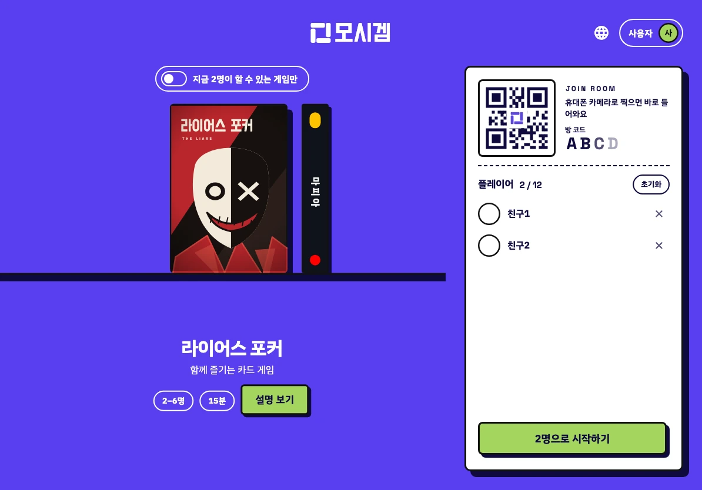

프론트
화면이나 로비 동작을 바꿀 때 열 파일을 찾습니다.
태블릿 로비 UI
왼쪽 로비의 요소를 누르면 오른쪽에서 담당 코드와 동작을 확인할 수 있습니다.

현재 Flutter 로비 위젯을 예시 방과 두 플레이어로 렌더링한 정지 화면입니다. 최초 로딩은 스켈레톤으로, 목록 새로고침은 기존 책을 유지하며 표시합니다. 표시된 영역을 누르면 담당 코드를 볼 수 있습니다. 실제 서버와 연결된 화면은 아닙니다.
앱 전체 코드 위치 찾기
화면 문구와 애니메이션은 각 게임의 phone_board.dart 또는 tablet_board.dart부터 확인하세요. 카드·턴·승패 규칙은 Cloud Functions에 있습니다. 룰렛 동작 시각화·코드 보기
휴대폰 입력이 서버 상태와 화면에 반영되는 순서
요청⇄RTDB
구독
- 방 만들기·참가·선택·종료 권한 검사
- 카드·역할 배정, 턴 검증, 승패 판정
- 중단·재접속·오래된 방 정리
쓰기⇄상태
읽기
상태 변경 위치 · Flutter는 게임 상태 변경을 Functions에 요청합니다. 서버가 검증하고 RTDB를 갱신하면 두 기기의 구독이 새 상태를 받아 화면을 그립니다. 접속 신호처럼 제한적으로 허용된 클라이언트 RTDB 쓰기는 예외입니다.
로비에서 게임 시작까지의 코드 흐름
방은 게임을 선택하기 전에 만들어질 수 있습니다. 게임 선택, 자리 또는 역할 설정, 서버 시작 요청 순서로 확인하세요.
참가 명령은 별도 방 존재 조회 없이 서버 트랜잭션에서 판정합니다. 자리 배치 응답의 확정 참가자 명단은 태블릿이 바로 사용하며, 구형 서버 응답과 명단 경합에는 RTDB 재조회가 남습니다. 윷놀이 행동과 홀덤·마피아·윷놀이 시작의 중복 조회만 줄였고 서버의 방·턴 검증과 명령 재생은 유지합니다.
책 표지·상세
Firestore 카탈로그에서 보여 줄 게임을 조회하고, 패키지의 책 아트로 표지를 렌더링합니다.
games/{id}방·QR·입장
태블릿 controller가 방을 만들고 휴대폰 player가 QR 또는 코드로 들어옵니다.
create / join callable게임 선택
선택한 책의 gameId를 방에 저장합니다. 실제 실행 가능 여부를 앱 registry와 서버에서 확인합니다.
selectRealtimeRoomGame자리 또는 역할 구성
보통 좌석을 배치합니다. 마피아는 시작 화면에서 역할 구성을 먼저 고릅니다.
Mafia: 역할 화면서버가 게임 시작
각 게임의 start_game callable이 규칙을 검증하고 공개·개인·서버 상태를 생성합니다.
game_*_start_game판정·종료·복구
휴대폰 입력과 태블릿 연출이 서버 phase를 따라갑니다. 종료·단절도 서버 상태로 처리합니다.
RTDB streams책 → 좌석 배치 → 게임
태블릿의 시작 흐름이 참가자 수·에셋·게임 ID를 확인하고 좌석을 준비합니다. 게임 패키지가 제공한 화면과 서버 시작 함수를 호출합니다.